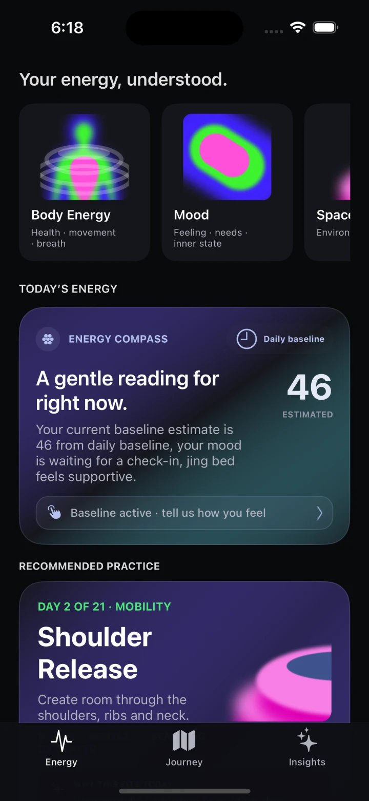

01
Body Energy
See recovery, movement, sleep, and breath as one readable state.
Personal energy intelligence
A calmer way to understand your body, mood, and space—then turn that insight into a personalized Qi Flow for right now.

Notice, not judge.
Practice, not optimize.
Rhythm, not streak.
A whole-person signal
Enlumora combines available health data, your own check-ins, and the character of your environment. With or without a wearable, it offers a grounded starting point—not a verdict.
See recovery, movement, sleep, and breath as one readable state.
Name how you feel without reducing emotion to a score or label.
Reflect on light, clutter, layout, and the way a room supports you.
Guided Qi Flow
Qi Flow blends breath-led energy work with the graceful, grounded movement of Tai Chi—simple enough to begin and spacious enough to feel like your own.
The Enlumora rhythm
Start with the data you have—or simply tell Enlumora how you feel.
See what may be supporting, draining, or asking for attention.
Choose a focused Qi Flow session, reset your space, or check in again later.
Enlumora Coach
Ask about your energy, choose a practice, reflect after movement, or set a thoughtful reminder. The Coach uses your current state and journey—not generic motivation.
Mobility · 5 minutes
Your 21-day practice
A missed day is information, not failure. The journey meets you where you return and helps you notice what practice changes over time.
Begin where you are
Enlumora helps you hear it—and respond with care.
Join the private beta ↗ Designed for iPhone · Apple Watch support in development